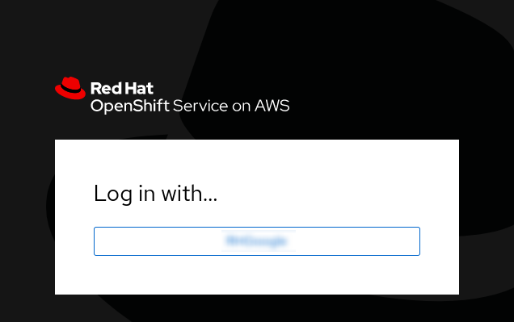
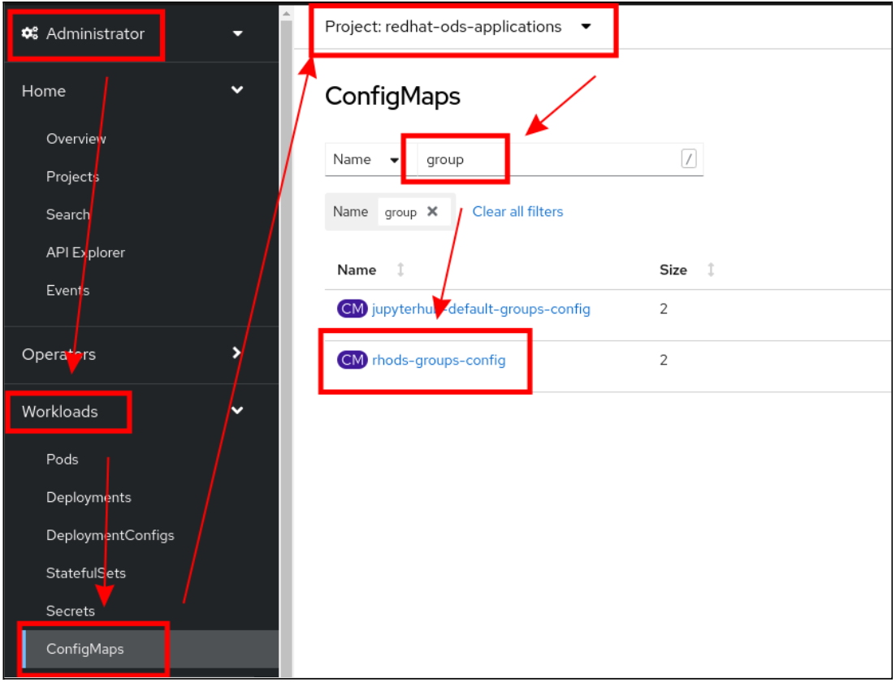
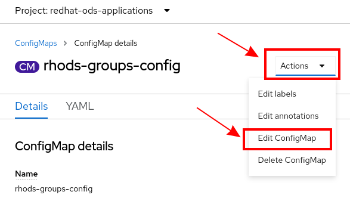

Configure the default RHODS Authorization
Rationale
Currently, the way that RHODS Authorization defaults are configured, anyone who tries to log in will not be recognized as a RHODS user.
Instead, they will be met with 403: forbidden error when they try to launch a notebook.
Although this is documented, I belive it’s a better experience to reconfigure the authentication is way that:
-
any OpenShift User automatically is recognized as a RHODS user
-
any OpenShift Cluster-Admin is recognized as a RHODS admin
|
The method described here is currently not documented. If you prefer to follow the official method, please refer to the documentation on how to add users. |
Log in to your OpenShift Console
-
From the Red Hat Console, with your cluster selected, click the Open Console button
-
A new tab will open
-
Click on the chosen Authentication Provider:
 -
Depending on the Authentication Provider, you might be prompted to enter credentials and/or passwords and/or to authorize an application. This is normal and expected.
Edit Configmap
-
Locate the configmap
rhods-groups-configin theredhat-ods-applicationsnamespace -
Edit the YAML of the configmap
 -
Modify the content so that:
-
opendatahub.io/modified:is set totrue -
admin_groups:is set tocluster-admins -
allowed_groups:is set to'system:authenticated'
-
-
The result should look like:

-
Click save
Note: These changes will not take effect until you restart all the JupyterHub pods. This is convered in the next section.
Do a rollout of the JupyterHub Pods
-
Locate the
jupyterhubdeploymentconfig in theredhat-ods-applicationsnamespace
-
Wait until all 3
jupyterhubpods have restarted, and one is Ready 2/2:
-
At this point, the changes in Authorization should be fully active.
-
The next section will validate that we can successfully use RHODS, by launching a notebook.